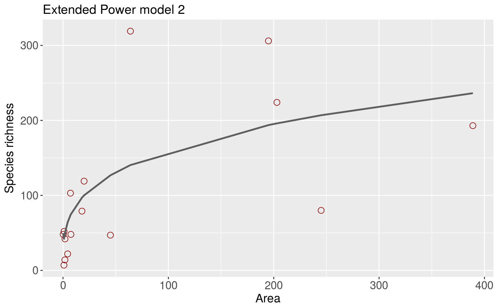

Fit the Extended Power model 2 model to SAR data.
sar_epm2(data, start = NULL, grid_start = NULL, normaTest = 'lillie', homoTest = 'cor.fitted')
| data | A dataset in the form of a dataframe with two columns: the first with island/site areas, and the second with the species richness of each island/site. |
|---|---|
| start | NULL or custom parameter start values for the optimisation algorithm. |
| grid_start | NULL or the number of points sampled in the model parameter space or FALSE to prevent any grid start after a fail in initial optimization to run a grid search. |
| normaTest | The test used to test the normality of the residuals of the model. Can be any of 'lillie' (Lilliefors Kolmogorov-Smirnov test; the default), 'shapiro' (Shapiro-Wilk test of normality), 'kolmo' (Kolmogorov-Smirnov test), or 'none' (no residuals normality test is undertaken). |
| homoTest | The test used to check for homogeneity of the residuals of the model. Can be any of 'cor.fitted' (a correlation of the residuals with the model fitted values; the default), 'cor.area' (a correlation of the residuals with the area values), or 'none' (no residuals homogeneity test is undertaken). |
A list of class 'sars' with the following components:
par The model parameters
value Residual sum of squares
counts The number of iterations for the convergence of the fitting algorithm
convergence Numeric code indicating model convergence (0 = converged)
message Any message from the model fit algorithm
hessian A symmetric matrix giving an estimate of the Hessian at the solution found
verge Logical code indicating model convergence
startValues The start values for the model parameters used in the optimisation
data Observed data
model A list of model information (e.g. the model name and formula)
calculated The fitted values of the model
residuals The model residuals
AIC The AIC value of the model
AICc The AICc value of the model
BIC The BIC value of the model
R2 The R2 value of the model
R2a The adjusted R2 value of the model
sigConf The model coefficients table
normaTest The results of the residuals normality test
homoTest The results of the residuals homogeneity test
observed_shape The observed shape of the model fit
asymptote A logical value indicating whether the observed fit is asymptotic
The summary.sars function returns a more useful summary of
the model fit results, and the plot.sars plots the model fit.
The model is fitted using non-linear regression. The model parameters are estimated
by minimizing the residual sum of squares with an unconstrained Nelder-Mead optimization algorithm
and the optim function. To avoid numerical problems and speed up the convergence process,
the starting values used to run the optimization algorithm are carefully chosen, or custom values can be provided
using the argument start. The fitting process also determines the observed shape of the model fit,
and whether or not the observed fit is asymptotic (see Triantis et al. 2012 for further details).
Model validation is undertaken by assessing the normality (normaTest) and homogeneity (homoTest)
of the residuals and a warning is provided in summary.sars if either test is failed.
A selection of information criteria (e.g. AIC, BIC) are returned and can be used to compare models
(see also sar_average)
Triantis, K.A., Guilhaumon, F. & Whittaker, R.J. (2012) The island species-area relationship: biology and statistics. Journal of Biogeography, 39, 215-231.
#> #> Model: #> Extended Power model 2 #> #> Call: #> S == c * A^(z - (d/A)) #> #> Did the model converge: TRUE #> #> Residuals: #> 0% 25% 50% 75% 100% #> -176.7 -20.1 15.7 34.0 127.2 #> #> Parameters: #> Estimate Std. Error t value Pr(>|t|) 2.5% 97.5% #> c 36.182739 20.427484 1.771277 0.099941 -4.672229 77.0377 #> z 0.271304 0.097117 2.793593 0.015215 0.077071 0.4655 #> d 0.547208 0.909007 0.601984 0.557538 -1.270806 2.3652 #> #> R-squared: 0.5, Adjusted R-squared: 0.38 #> AIC: 143.29, AICc: 146.92, BIC: 146.38 #> Observed shape: sigmoid, Asymptote: FALSE #>plot(fit)